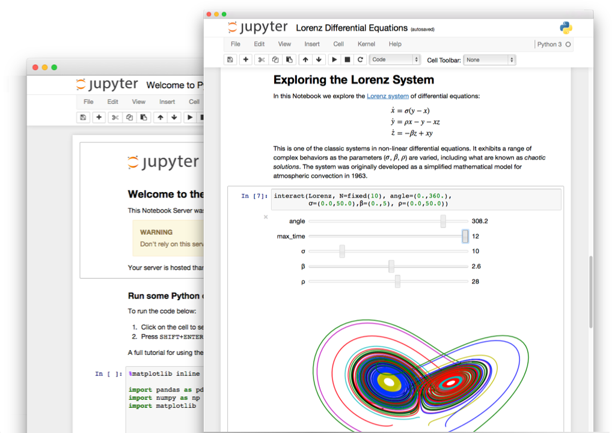
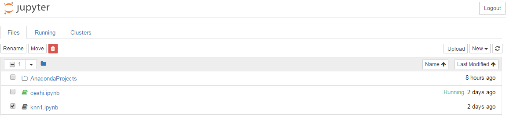
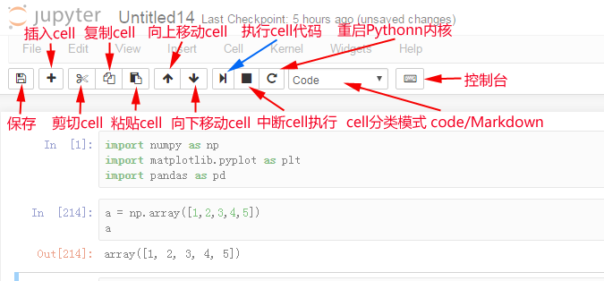

交互式编辑器 Jupyter notebook

为什么使用Jupyter Notebook？
一个完整的Jupyter Notebook数据报告演示
交互式计算
- 软件开发工程：工程/目标明确，按部就班
- 需求分析，设计架构，开发模块，测试
- 探索/研究/学习：艺术/目标不明确，摸索前进
- 目的是抽象的洞察目标，而不是机械的完成任务
- 通过执行代码来理解问题
- 迭代式地改进代码来改进解决方法
实时运行的代码、叙事性的文本和可视化被整合在一起，方便使用代码和数据来完成文档、讲述故事
科学计算领域通过 Matlab、IDL 和Mathematica等程序语言首先熟悉了人机交互式的计算方式，Jupyter则是最新的集大成者
交互式编程工具
- 操作系统自带Shell
- Python自带IDLE
- IPython，增强版Shell
- Jupyter Notebook：网页版交互式代码笔记工具
- JupyterLab：下一代Jupyter Notebook，模块化和可扩展接口，基于网页的IDE,测试版
- nteract 客户端：桌面版Jupyter Notebook，基于Electron，测试版
- JupyterHub：服务器端多人权限Jupyter Notebook系统
- 其他编辑器和IDE对交互式编程的支持：如VScode/PyCharm
Jupyter Notebook
Jupyter项目是一个交互式的Python生态系统，最常用的是Jupyter Notebook
- Jupyter Notebook，原名IPython Notbook，是IPython的加强网页版
- 名字源自Julia、Python 和 R（数据科学的三种开源语言）
- 是一款程序员和科学工作者的编程/文档/笔记/展示软件
.ipynb文件格式是用于计算型叙述的JSON文档格式的正式规范 交互式的编程环境，友好的界面，便于分享的文档格式，对排版语法、绘图、数学公式的支持，使她成为最流行的Python科学计算工具
使用场景：编程(探索、学习、数据方向)，文档，笔记，教学，演讲，数据分析报告等等
- Jupyter Notebook ≈ Python + MATLAB + Word + Excel + PowerPoint
打开方式
Jupyter Notebook是一个采用C/S架构的网站，通过Tornado建立WEB服务器端，使用浏览器作为客户端
1：命令行进入对应目录
用Windows控制台（windows键+R，输入cmd回车）或Anaconda Prompt进入想作为开发目录的磁盘盘符，进入文件夹，查看目录
e:
cd python
dir
2：输入命令
会自动弹出浏览器窗口打开notebook
jupyter notebook
# 或 jupyter-notebook
- 本地notebook的默认URL为：http://localhost:8888
- 如果想换其他浏览器打开，只输入本地域名端口回车打不开，会提示输入密码，需要拷贝命令窗口的完整URL到新浏览器才可以打开（带token参数的url,注意参数的空格去掉）
- 注意，不要直接打开notebook，想让notebook打开指定目录，只要进入此目录后执行命令即可
3：使用完成，关闭notebook服务
快捷键CTRL+C，（Linux/MACOS，5秒内输入y关闭服务，否则服务不会关闭需要再按 CTRL+C）
注意：
- (只关闭网页并没有关闭notebook服务，后台仍在运行
- 如果虚拟机或宿主机电脑开启某些WEB相关服务(如网络代理或去广告服务)，可能会导致Jupyter Notebook无法运行**
界面操作
notebook分为目录界面和内容界面
1：目录界面操作

- 新建notebook文档
- notebook的文档格式是.ipynb，一种类JSON的文本格式
- 启动终端（如果服务端是Windows不支持）
- 导入导出文档（直接在系统目录内复制粘贴后点击右上角按钮刷新页面）
- Running-Shutdown，关闭文档
2：内容界面操作

cell操作（重要）
cell：一对In Out会话被视作一个代码单元，称为cell
Jupyter支持两种模式：
- 编辑模式（Enter）
- 命令模式下回车Enter或鼠标双击cell进入编辑模式
- 可以操作cell内文本或代码，剪切／复制／粘贴移动等操作
- 命令模式（Esc）
- 按Esc退出编辑，进入命令模式
- 可以操作cell单元本身进行剪切／复制／粘贴／移动等操作
- 好的编程习惯是：编辑内容完成后随手按ESC进入命令模式
工具栏操作cell

快捷键操作Cell
Cell有两种工作模式：
- 编辑模式（Enter）
- 命令模式下回车Enter或鼠标单击cell进入编辑模式
- 可以操作cell内文本或代码，剪切／复制／粘贴移动等操作
- 命令模式（Esc）
- 按Esc退出编辑，进入命令模式
- 可以操作cell单元本身进行剪切／复制／粘贴／移动等操作
好的编程习惯是：编辑内容完成后随手按ESC进入命令模式
两种模式都可使用的快捷键
- Shift+Enter，执行本单元代码，并跳转到下一单元
- Ctrl+Enter，执行本单元代码，留在本单元
次要的快捷键：
cell行号前的 * ，表示代码正在运行
命令模式：按ESC进入
Y，cell切换到Code模式
M，cell切换到Markdown模式
A，在当前cell的上面添加cell
B，在当前cell的下面添加cell
双击D，删除当前cell
Z，回退
Shift+M，合并cell，向下合并
L，为当前cell加上行号
编辑模式：按Enter进入
多光标操作：Ctrl键点击鼠标（Mac:CMD+点击鼠标）
回退：Ctrl+Z（Mac:CMD+Z）
重做：Ctrl+Y（Mac:CMD+Y)
补全代码：变量、方法后跟Tab键
Ctrl+Shift+减号，分割cell，在光标处
为一行或多行代码添加/取消注释：Ctrl+/（Mac:CMD+/）
屏蔽自动输出信息：可在最后一条语句之后加一个分号
应用：执行HTML/CSS/JavaScript
在cell中以Markdown模式执行HTML/CSS/JS
（HTML支持，CSS只支持行内样式，JS不支持）
IPython专用魔术命令 %%HTML 载入HTML/CSS/JS
在cell中以原生HTML方式执行，HTML/CSS/JS全支持
- 优点：书写简单，推荐
- 缺点：非IPython环境不支持
%%HTML
<a href="###" class="class3" style="color:#ff0;">aaaaaaaaaaa</a>
<a href="###" id="id3">bbbbbbbbbbbbbbbb</a>
<style>
.class3{background:#0f0;}
</style>
<script>
var ida3 = document.getElementById('id3');
ida3.style.background = '#f00';
</script>
应用：Jupyter Notebook隐藏代码
用于ipynb文件和HTML文件，默认只显示解释和执行结果，点击按钮隐藏/显示代码，输出数据分析报告时用
%%HTML
<script>
code_show=true;
function code_toggle() {
if (code_show){
$('div.input').hide();
} else {
$('div.input').show();
}
code_show = !code_show
}
$( document ).ready(code_toggle);
</script>
<form action="javascript:code_toggle()"><input type="submit" value="点击按钮显示/隐藏文档代码！"></form>